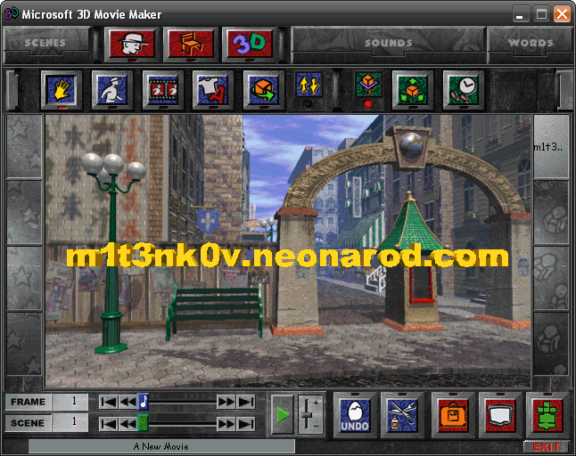

|
|
|
|
МЕНЮ САЙТА Главная Блог Об авторе История сайта Контакты Баннеры Ссылки m1t3nk0v, 2021-2023 
|
<- назадMicrosoft открыла исходный код 3D Movie Maker4 мая 2022, 20:30 МСК 3D Movie Maker - это детская компьютерная программа, выпущенная компанией Microsoft в 1995 году в рамках линейки мультимедийных приложений для домашнего пользования Microsoft Home. 3D Movie Maker позволяет использовать для создания трёхмерной анимации 40 персонажей в заранее отрисованных сценах, программировать выполнение ими различных действий, добавлять объекты и аудиоэффекты и даже записывать голоса с помощью микрофона. В результате пользователь получает трёхмерный анимационный фильм с частотой в 6 к/с. Для программы выходила куча утилит и дополнений, как официальных (например, Nickelodeon 3D Movie Maker), так и сделанных энтуазистами. И несмотря на свой возраст и явные ограничения, такие как низкая частота кадров и отсутствие поддержки русского языка, её коммьюнити до сих пор живёт и процветает, и продолжает делать с её помощью анимационные фильмы, а энтузиасты продолжают делать для неё модификации. Сегодня Microsoft опубликовала исходный код программы под лицензией MIT, спустя 27 лет с момента её релиза. При этом уточнила, что:
В первую очередь исходный код 3D Movie Maker будет интересен тем, кто хочет адаптировать программу под работу на современных версиях Windows или любых других операционных системах. |
{kind=link}